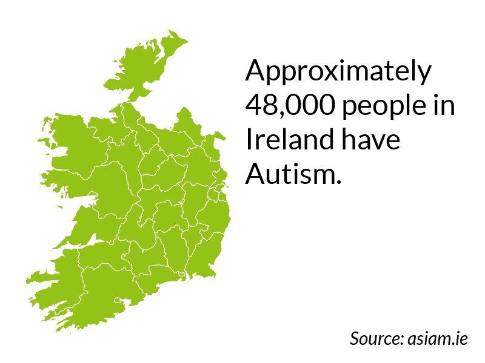

Understanding Le Chéile
Understanding Le ChéileUNDERSTANDING AUTISM
Understanding Autism
Autism Spectrum Disorder (ASD) is a neurological disorder comprised of numerous characteristics. These include inattention, sensory sensitivities, obsessive-compulsive tendencies, narrow ranges of interests, distinct repetitive behaviours, poor executive function, and difficulties in socialising / connecting/ empathising with others. The severity of each characteristic varies in each individual, as autism is a spectrum.

While the spectrum is far-ranging, autism can be grouped into three levels.
- Level 1 autistic people have a naturally impaired ability to socialise and connect with others. Other difficulties include struggles with executive function and an inability to live without a routine. With only mild support, a level 1 autistic person can live a full independent life.
- Level 2 autistic people are classed as requiring substantial support. They have the same issues as level 1 autists but with greater severity. Verbal and non-verbal communication are also impaired.
- Level 3 autism is the most severe, requiring extensive support. It is more severe than level 2 autism, and level 3 autists generally go into meltdowns if their routines or repetitive behaviours are disturbed in any way. From a sensory point of view, the world is overwhelming to them at every moment; only with extensive support can level 3 autists grow to manage their challenges in a productive way.